| 日付 | 2019年2月16日（土） - 2019年2月17日（日） |
|---|---|
| メンバー | 家族（妻、長女・7歳、長男・5歳） |
| アクセス | 車 |
今年2回目のスキー。昨年に引き続き白樺湖周辺に行くことにする。
今回はしらかば2in1スキー場に行ってみる。
1日目
スキー場に到着。スクールは午前中がすでに一杯だったので、まずは家族で滑ることにする。
正面のコースはかなりの急斜面でインパクトがある。
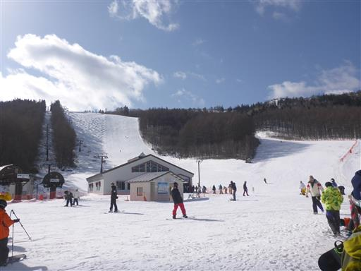
こちらは緩斜面。広くて滑りやすそうだ。
まずは簡単なところから開始する。
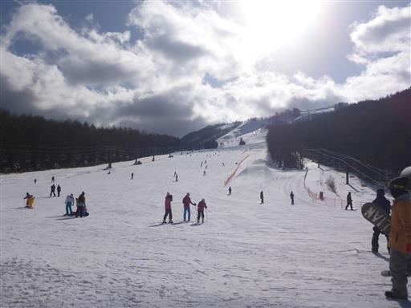
コブ斜面。こちらは上級者向きコースだ。
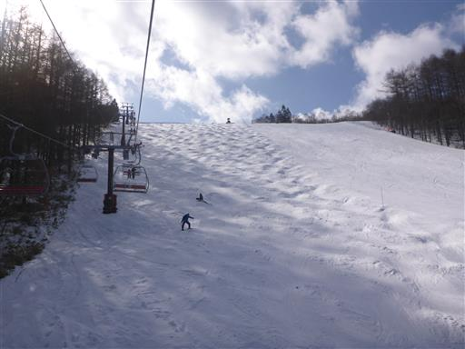
スキー場からは蓼科山が良く見える。雲が多く山頂は見えたり隠れたりだ。
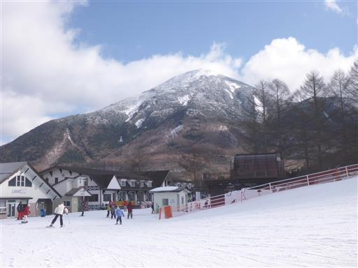
このスキー場は急斜面の上級者コースが多い。初～中級者コースを中心に滑る。
横に広いが縦に長くないので、ロングコースを滑れないのが欠点だ。
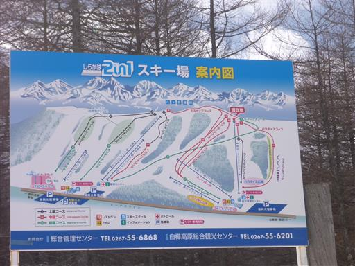
何本か滑ったら昼食休憩。大して列は長くないのに、ものすごく待たされる。
もう少し工夫が必要だ。
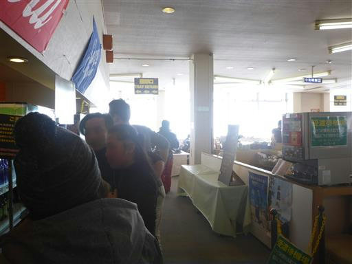
キッズプレートには綿菓子がついている。
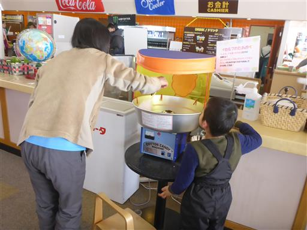
昼食後はスクールに預ける。開始までの待ち時間は雪遊び。
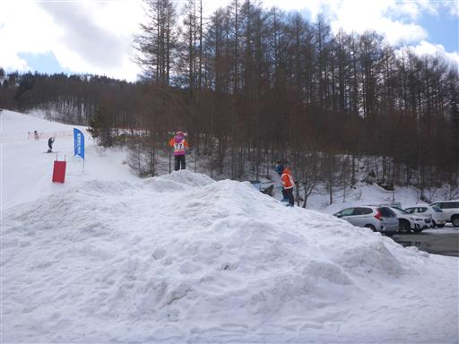
ジャンプ台があり次々とジャンプしている。ほとんどはスノーボーダーだ。
息子は興味深そうに眺めている。
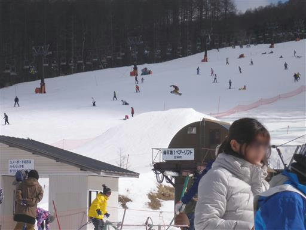
子供達を預けたら自由になったので、リフトで一番高いところまで登る。
ここからはこれまで見えなかった展望が一気に広がる。
左手のピークは霧ヶ峰の車山だ。
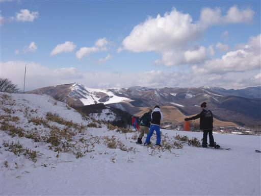
こちらは美ヶ原。
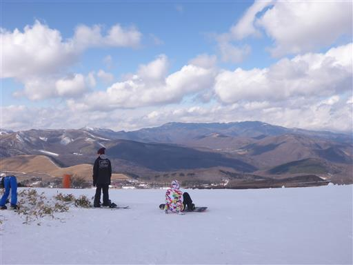
巨大な南アルプス。
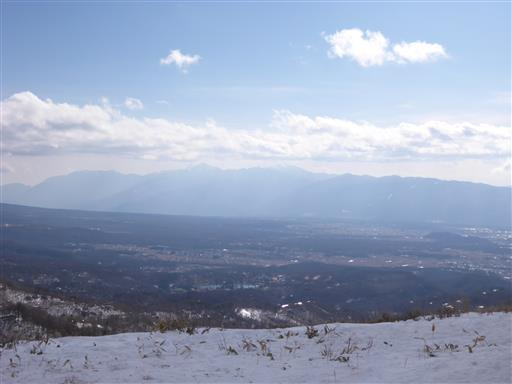
残念ながら南八ヶ岳は雲の中だ。
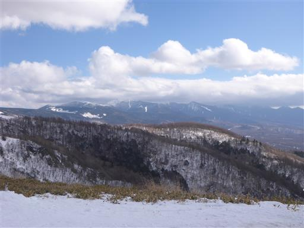
側に小さなピークがあったので登ってみる。
山頂標識はないが八子ヶ峰西峰のようだ。
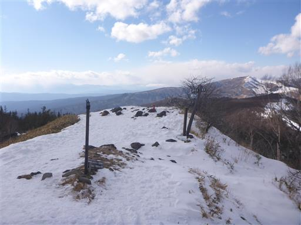
登山者は多いようで、下から登ってくる足跡がたくさん見える。
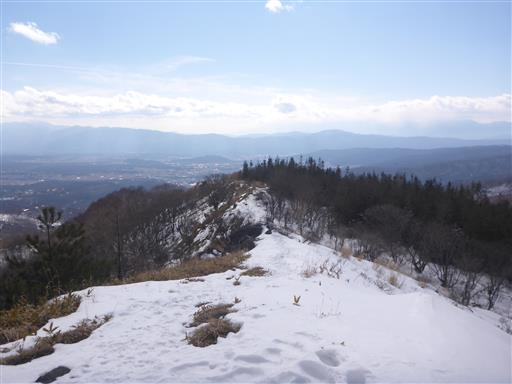
一番高いリフトからのコースは上級者コース。全体的に傾斜が急だ。
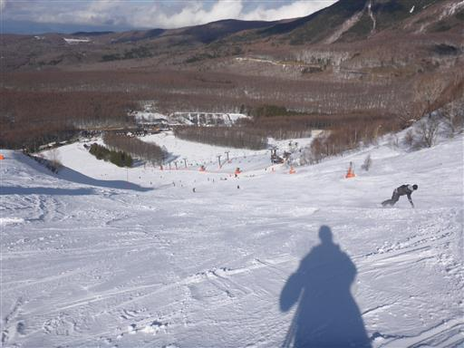
子供達がいない間に上級者コースをたくさん滑り、レッスン後に合流。
レッスンで緩斜面は飽きたらしいので、中級コースを中心に滑る。
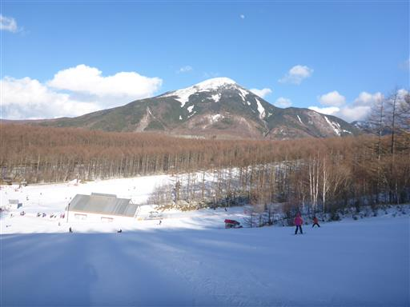
16時になりだいぶ影が伸びてきた。ちょっと早いが撤収することにする。
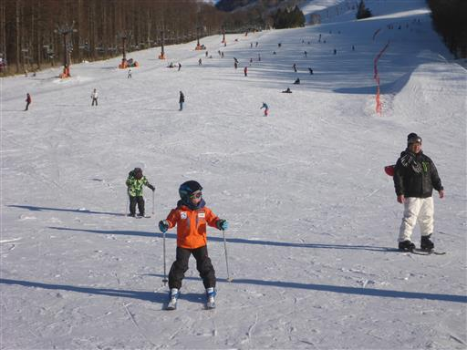
本日の宿はラ・フォンテーヌ・アルジャンテ。
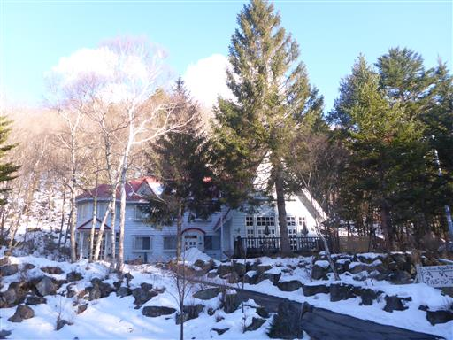
見ているだけで暖かい暖炉。
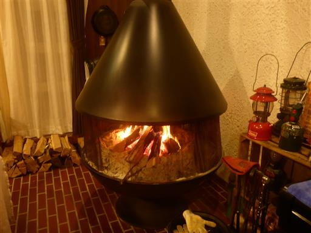
夕飯後は外に出てみる。残念ながら雲が出ていて、あまり星は見えない。
子供達はかまくらで遊んでいる。季節外れの雨でだいぶ小さくなってしまったらしい。
本日は朝早かったので、早めに寝ることにする。
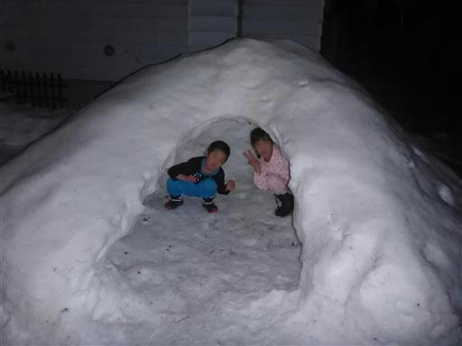